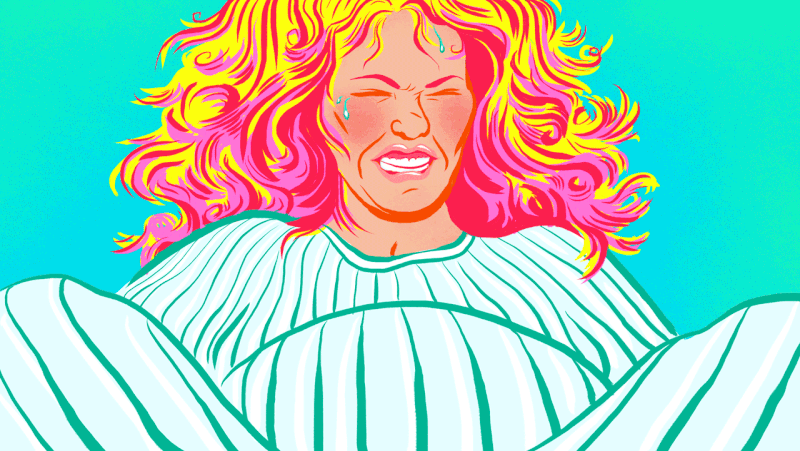

5 Things I wish I had known before I became a mum
The toughest job I have ever had, and yet it is unpaid, but is highly rewarding. I remember being so excited about what was to come when I was pregnant. It didn’t even occur to me that it would be hard. Here are five things you should know about being a new mum that I wish I knew, just so I could’ve been better prepared:
1. Labour is probably the worst pain you will feel, and you won't give a shit about the way you look
I could never have imagined what I was going to put my body through. I also never realised how physically and emotionally strong I could be, and also how strong my partner could be. We think now in a modern world with great medical care that labour delivery can be pretty straight forward, I was even contemplating a home birth at one point during my pregnancy! I couldn’t have been happier to be in a hospital with all the medical attention that I needed. Up to giving birth I thought the national health service in the U.K was a bit of a joke given my previous experience with it, but my attitude towards our health system has changed so much, I even have great respect for the people that make it. My advice to anyone is, trust the medical staff when it is your first time. You will also bare parts of yourself to these people and your partner that you previously were shy about.
2. Breastfeeding is a long and hard journey
I remember just thinking when I was pregnant that it would just happen and it was incredibly natural. But for most new mothers, it doesn’t feel natural, especially at first. I also didn’t realise how many mothers give up so early on. But now, I totally see why. There are so many problems from back aches from bad posture, to engorgement or not being able to produce enough milk. On top of that, we are told of the countless benefits there are when breastfeeding and it is necessary in giving our babies the best start, which can just add to the pressure when things are not going right.
It’s also really difficult getting up every 2-3 hours at night when you have just gone through a long labour!3. The tiredness is a whole new level of tiredness!
So after you go through labour and the adrenalin of looking after a newborn runs out, which is about day 2 or 3, the tiredness really hits you! Like, really hits you! Ever done an all nighter before a big exam? Or gone on a weekend bender? The tiredness from being a new parent is ten times worse! But now, six weeks down the line, we start to get 3-4 hour blocks of sleep at night, and it suddenly feels like I can function normally and I feel refreshed. It’s suddenly amazing how we can function on less sleep.
4. Babies make lots of noises
Well our baby does anyway. When she’s not screaming like a banshee, she is grunting, sniffling, snuffling, squeeling, cooing, oohs and aahs etc. But, the funny thing is when she stops, I get worried and poke her to see if she’s breathing!
5. Baby poo will make you never eat Chicken Korma again
Lover of Indian curries? Not anymore. On the bright side that means baby is healthy!